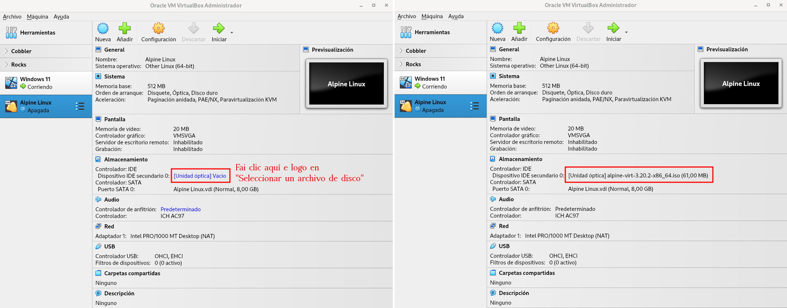
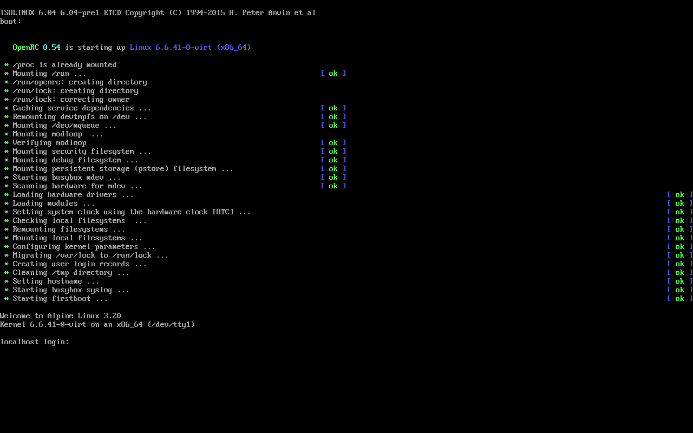
IMPORTANTE: se por algún motivo tiveras que interromper a instalación, podes facelo pulsando Ctrl+C e volver iniciala desde este paso.
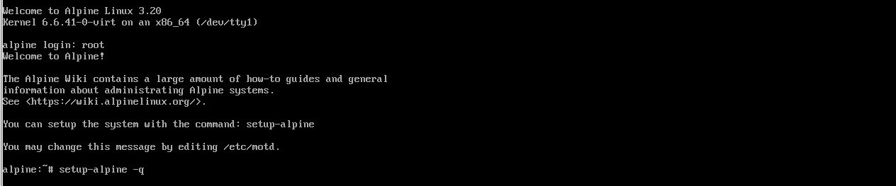
Na disposición (layout) escribe es.
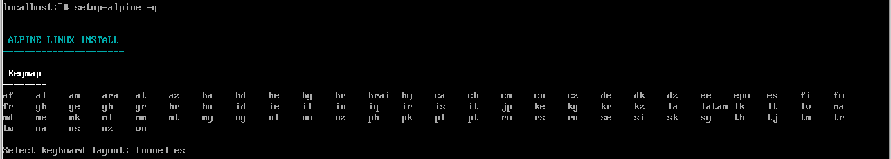
Na variante depende do teclado que teñas (p.e. es-winkeys para un teclado con teclas Windows, es-mac para un teclado Mac). En caso de dúbida escribe de novo es.
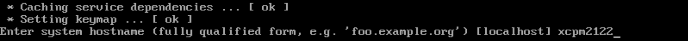
Acepta (sen escribir nada) as opcións por defecto. Alpine configurará a interface eth0 para que obteña automaticamente unha IP cando se inicie a VM. Esta interface correspóndese co único adaptador virtual de rede que temos na VM (podes comprobalo nas propiedades de rede da VM no VirtualBox). Para obter automaticamente a IP úsase un servizo denominado DHCP que xa ven preconfigurado co VirtualBox. Na captura pode verse como se lle asigna a IP 10.0.2.15 á VM usando DHCP.
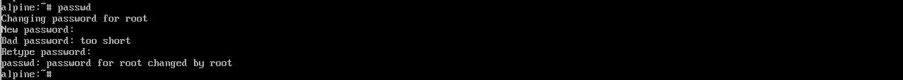
IMPORTANTE: non uses caracteres "raros" para o contrasinal, porque vamos ter que usalo nalgunha ocasión co teclado sen configurar. Se usas o guión lembra que cando o teclado non estea configurado terás que premer a tecla que está situada á dereita do 0.
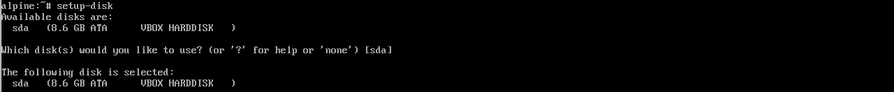
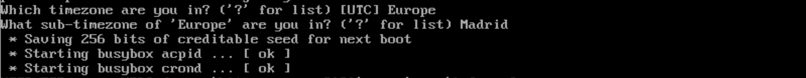
Para elo terás que comprobar na páxina: https://mirrors.alpinelinux.org se algún dos repositorios da listaxe que se che mostra está actualizado para a versión 3.16 de Alpine. Tes que procurar un repositorio dos da listaxe que estea en estado OK na columna v3.16, igual que se ve no exemplo para o repositorio mirror.mangohost.net.
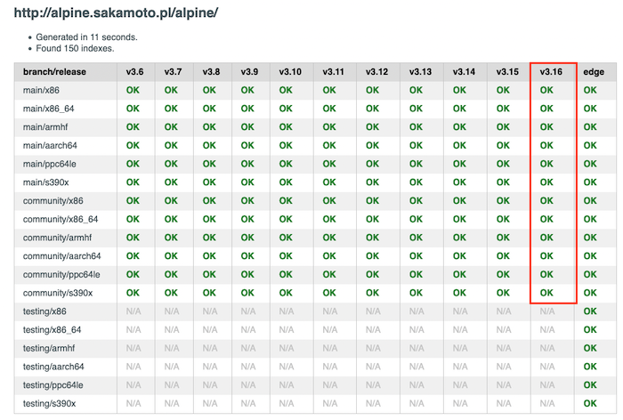
Escribe o número que o repositorio ten na listaxe para escollelo (no exemplo o repositorio mirror.mangohost.net ten o número 69 na listaxe).
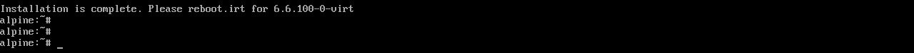
IMPORTANTE: non uses caracteres "raros" para o contrasinal, porque vamos ter que usalo nalgunha ocasión co teclado sen configurar. Se usas o guión lembra que cando o teclado non estea configurado terás que premer a tecla que está situada á dereita do 0.
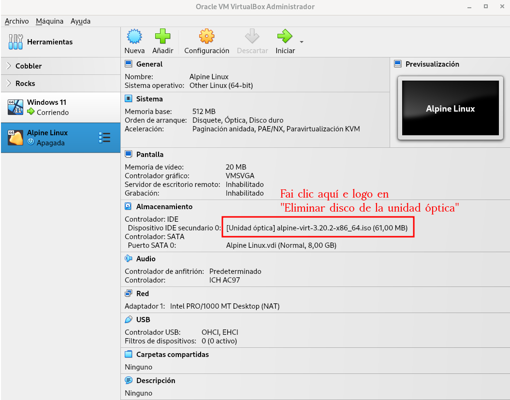
IMPORTANTE: asegúrate de que se configura correctamente o usuario (que non aparece ningunha mensaxe de erro e que aparecen as que indican que se instalaron correctamente o doas e o busybox). Se non fora así terás que interromper a instalación pulsando Ctrl+C e volver comezar desde o paso 4.

Escribe sda para usar o único disco ríxido que temos na VM (podes comprobalo nas propiedades de almacenamento da VM no VirtualBox). No tipo de instalación escribe sys para realizar unha instalación estándar.
O instalador procederá a realizar o particionamento do disco.
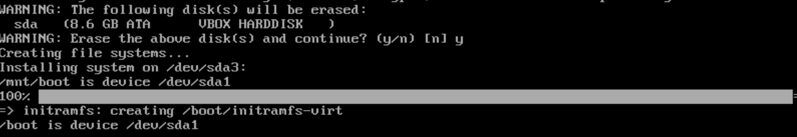
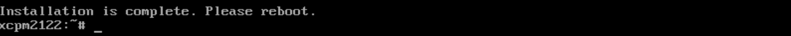
Antes de continuar, desde a configuración de almacenamento da VM en VirtualBox, extrae a imaxe ISO de Alpine.

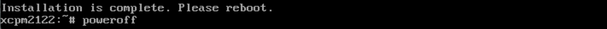